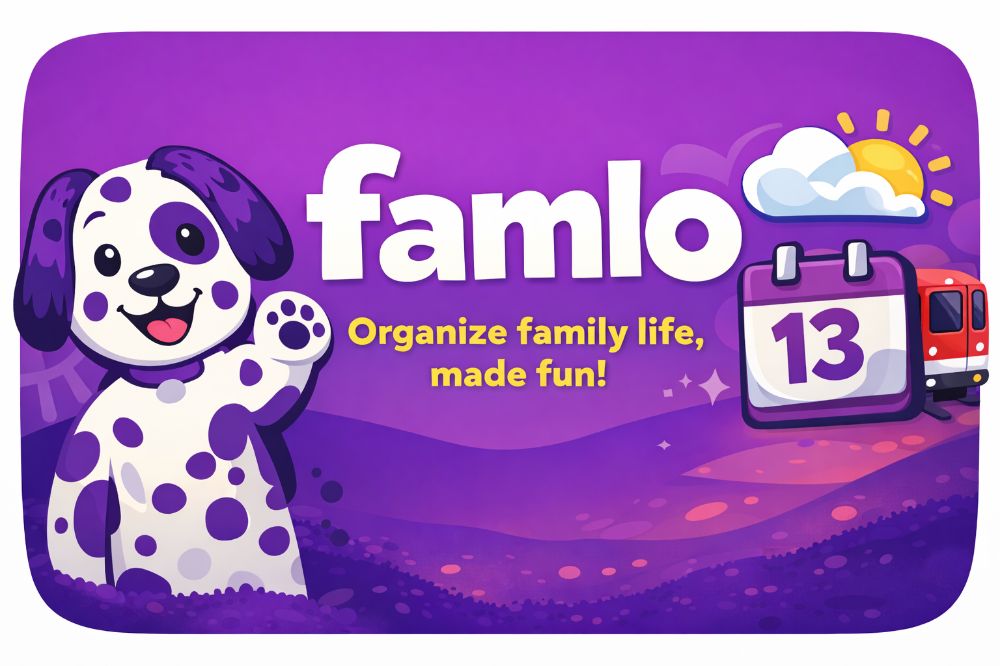

Det viktigste først
Slipp å hoppe mellom flere apper bare for å vite hva som skjer i dag, hvordan været blir og hvordan dere kommer dere dit dere skal.
Når kalender, vær, kollektiv og små avgjørelser er spredt, blir hverdagen fort mer kaotisk enn den trenger å være. Famlo samler det viktigste i ett vennlig overblikk som er raskt å forstå.
Laget for raske blikk i en travel hverdag, ikke for flere menyer, mer støy eller mer koordinering enn nødvendig.

Famlo skal ikke føles som enda en app som krever mer oppmerksomhet. Den skal redusere friksjon, gjøre informasjon lettere å oppfatte og hjelpe familien med å holde oversikt uten å holde alt i hodet.
Slipp å hoppe mellom flere apper bare for å vite hva som skjer i dag, hvordan været blir og hvordan dere kommer dere dit dere skal.
Store flater, tydelige kontraster og en vennlig visuell stil gjør det lettere å lese informasjon raskt i en travel morgen.
Når familien deler en tydelig oversikt, blir det enklere å følge opp avtaler, planer og små endringer underveis i dagen.
Famlo er laget for å gi korte oppsummeringer og nyttig hjelp når det er mye som skjer samtidig hjemme.
Åpne Famlo og få en roligere start. Du ser hva som skjer nå, hva som kommer senere i dag og hva familien bør være forberedt på.
Kalender, vær og transport presenteres side om side, så dere kan planlegge uten å bytte kontekst.
Famlo-hjelpen gir en vennlig oppsummering når det er mange ting å holde styr på samtidig.
Fargene, formene og uttrykket bygger på appen, men nettsiden løfter fram produktet som noe inviterende og nyttig for familier.
Se hvordan været er nå og senere i dag, så det blir lettere å kle barna riktig og planlegge overganger.
Famlo gjør avgangene mer synlige og mer brukbare i øyeblikket, så familien slipper mer gjetting enn nødvendig.
Famlo samler dagens planer i en form som er enkel å lese og lett å følge opp gjennom dagen.
Når mange små ting skjer samtidig, kan Famlo hjelpe dere med å oppfatte hva som er viktigst akkurat nå.